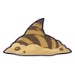
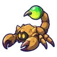
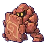
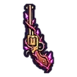
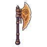
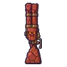
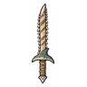
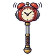
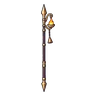
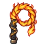

ป้อมโจรทะเลทรายร้าง
ดูบนแผนที่และวิธีไป วางแผนฟาร์ม
ชั้นล่างในแดนใต้สีแดง · Lv 70–80
มอนในแมพ (9)
| มอน | Lv | ธาตุ | โซน |
|---|---|---|---|
 ฉลามทราย | 70–80 | ดิน | ป้อมไม้บนหิน |
 แมงป่องยิงพิษ | 70–78 | ไฟ | ป้อมไม้บนหิน |
| 70–78 | ดิน | ป้อมไม้บนหิน | |
| 72–80 | ลม | ป้อมไม้บนหิน | |
 ยักษ์หินทราย | 72–80 | ดิน | ป้อมไม้บนหิน |
| 72–80 | ไฟ | ป้อมไม้บนหิน | |
| ฉลามทราย · ร่างหนังฟ้า | 72–80 | ดิน | |
| 72–80 | ไฟ | ป้อมไม้บนหิน | |
 บาร์โธ มือปืนเหมืองร้าง บอสผู้ถูกรากสิง | 82–82 | ดิน |
อุปกรณ์ที่ดรอปในแมพนี้
| ของ | โอกาสสูงสุด |
|---|---|
| ปืนลูกโม่รากเหมือง | 0.5% |
| 0.25% | |
| 0.25% | |
 ขวานยักษ์ฟอสซิล | 0.25% |
 ลูกซองโกเลมหินแดง | 0.25% |
| 0.25% | |
 ดาบคู่ฟันฉลามทราย | 0.24% |
| เกราะถ่านกองไฟ | 0.15% |
| ชุดกิ้งก่าทราย | 0.15% |
 ค้อนยักษ์นาฬิกาปลุก | 0.12% |
 หอกยาวคนจุดตะเกียง | 0.12% |
 แส้ลิ้นไฟซาลาแมนเดอร์ | 0.12% |
| 0.12% | |
| 0.12% | |
| 0.12% |